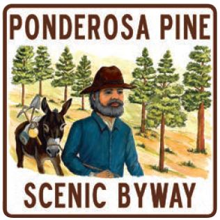

The Ponderosa Pine Scenic Byway starts in Boise. It follows Idaho 21
north to the historic mining town of Idaho City, where you can still
pan for gold in a nearby stream bed. Campgrounds and fishing
opportunities dot the route from Idaho City to Lowman and along the
South Fork of the Payette River, as you slowly climb along the
byway's northeasterly route.
At the cutoff road to Grandjean, the roadway leaves the Payette
River and squeezes between two of Idaho's wilderness areas. On
the right, the Sawtooth Wilderness and its 217,000 pristine acres
of coniferous forest lands and wilderness lakes. To the left, the
Salmon-Challis National Forest, entryway to the 2.3-million-acre
Frank Church River of No Return Wilderness, with more contiguous
acres of roadless wilderness than anywhere else in the lower 48
states.
From Banner Summit, one of Idaho's highest at 7,056 feet, you begin
a descent into the town of Stanley. As the roadway grooves through
the steep foothills and thick forest, you can catch glimpses of the
Sawtooth Mountains ahead; finally, as you drop into Stanley,
they come into full, magnificent view.